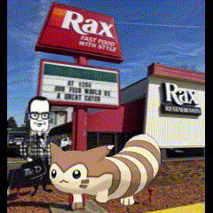

The Boys
| The Boys | |
|---|---|
|  | |
| Established | 2021 (informal), 21 March 2022 (server) |
| Origin | The Schlobby, Elizabethtown, PA, USA |
| Years active | 2021-present |
| Leader | None |
| Notable shenanigans | See list of shenanigans |
| Notable people | See list of The Boys members |
{kind=link}
The Boys, also known as The Boys US, is a group of silly gooses, bad bitches, and Neil Divins formed in late 2021 for the goal of increasing shenanigans, hijinks, and general tomfoolery among its members. The Boys has since gone on to become the greatest friend group of all time, currently comprising over a dozen members and several spin-off groups.
Founding
The precursor to The Boys started when Cameron and Neil met in a discussion about Chris Chan. Their friendship then ballooned into a whole group, necessitating the formation of a group chat.

Initial form
The Boys were formed in late 2021 when the original Boys decided to make a text chat. With the goal of increasing shenanigans among the group, The Boys soon grew in shenanigans and scale to a point beyond basic text messages.
Current form
In March of 2022, The Boys formed their current digital base of operations on Discord. This allowed diversification and expansion of The Boys' shenanigans, allowing many other members to later join and grow the scale of the shenanigans. The Boys currently comprises 3 countries, 4 chats, and several websites.